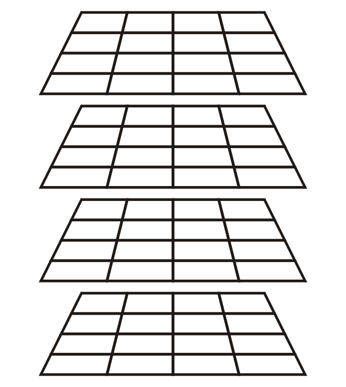

3D Tic Tac Toe - post mortem
For the past two months, as part of my Artificial Intelligence independant study at school, a fellow student and I have been working on a 3D Tic-Tac-Toe AI. If you're unfamiliar with it, the game consists of a 4x4x4 Tic Tac Toe board like so:  You can win on all 4 "classic" planes, but there are also 14 other planes to play on. Can you recognize them all? This was by far the largest problem my partner and I had tried to tackle, and we were a little lost on where to begin.
Representation
At the very least, primarily from a past exercise in the class, we knew we had to figure out a high quality representation of the game framework and states before doing anything else.
To begin, we had to first understand the game itself (honestly, this was partially an excuse to simply play the game, which is magnitudes more fun than normal 3x3 Tic Tac Toe). After some brute-force style math, we concluded the board consists of 76 lines on 18 planes.
A Plane is represented as Line[10], a Line is Coordinate[4], and a Coordinate is Integer[3].